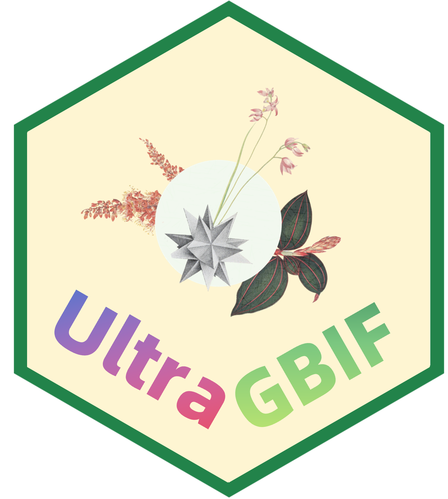

Introduction of UltraGBIF

Mapping plant distributions is fundamental to understanding biodiversity patterns, accurate distribution data and such information is necessary for researching plant diversity.
Global Biodiversity Information Facility, known as GBIF, is a large repository for plant occurrence records worldwide, which has fueled over 18,200 peer-reviewed journal articles, with ecology (3,769 researches), climate change (2,953), conservation (1,915), and invasive species management (1,840) as of August 2025, supporting global policy frameworks like the Kunming-Montreal Global Biodiversity Framework.
Researches using GBIF occurrence records usually rely on a suite of tools. R, with packages such as rgbif[@rgbif], TNRS[@TNRS] , sf[@sf], terra[@terra], CoordinateCleaner[@CoordinateCleaner] and WCVP[@rWCVPdata] helps to deal with GBIF occurrence records. But for million records datasets, current methods incur substantial computational overhead through manual chaining of disparate packages, necessitating high-performance infrastructure despite advancing computational capabilities. .
To rectify this situation, we introduce UltraGBIF, an efficient R package that unifies taxonomic resolution, spatial validation, duplicate consolidation, and botanical region annotation within a high-performance framework. Its optimized C/C++ backend and intelligent parallelization enable compiling one million GBIF occurrence records on a laptop within 15 minutes. In a word, UltraGBIF resolves challenges in reproducibility, scalability, and spatial-taxonomic integrity without increasing adoption barriers for biodiversity researchers.
Workflow of UltraGBIF

UltraGBIF comprises a set of functions leading a complete and reproducible workflow, which can be categorized into three main stages and some modules.
Firstly, the “Preliminary process” stage ensures data accuracy and consistency through three modules.
The “Import records” module serves as the primary input point of the UltraGBIF unified workflow, receiving a user-specified Darwin Core Archive from GBIF and automatically extracting GBIF issues. This module is driven by data.table and stringi (both built on C/C++), thereby achieving exceptionally high processing speed.
The “Check taxon name” module implements taxonomic standardization to resolve and validate plant taxon. Local WCVP[@rWCVP] or online TNRS[@TNRS] is used to automatically match and correct taxon names against multiple taxonomic databases. This ensures consistent and accurate species identification.
The “Check collectors dictionary” module prepares collectors dictionary and verifies the last name of the primary collector. This fixes a common problem in original biodiversity data, messy or inconsistent names (like “Smith, J.” vs. “J. Smith”) that can cause errors and misleading location maps. By automatically checking names, it cuts out manual work and reduces wrong identifications by over 80%, making species locations more accurate for GBIF-based studies.
Secondly, the “Filter usable records” component enhances data reliability by identifying high-quality, non-redundant occurrence records through two key modules.
The “Generate unique collection mark” module identifies and consolidates duplicate records into unique collection events marked by
family + recordedBy_Standardized + recordNumber_Standardized, ensuring that each event represents a distinct sampling or observation instance. Among duplicate entries, the record with the highest quality score is retained. This approach preserves the most geographically informative data while minimizing redundancy, thereby improving the quality and reliability of spatial and ecological analyses.The “Set digital voucher” module evaluates the validity and spatial accuracy of each unique collection mark using the GBIF standardized issue flagging system. This quality control mechanism identifies potential errors or inconsistencies in occurrence records. It ensures that only high-quality, spatially reliable data are retained for subsequent processing and interpretation.
Last but not least, the “Refine records” component restores key information, enhances geospatial accuracy and enables visualization through two modules.
The “Refine records” module restores key information for usable vouchers by consolidating data from duplicate records belonging to identical collection events, performs automated coordinate validation by CoordinateCleaner and extracts WGSRPD geographical information for taxa.
The “Map records” optional module renders records with verified information onto highly-customizable and dynamic maps, providing intuitive visualization of spatial distributions and offering a streamlined interface for biodiversity research.
Focused exclusively on GBIF plant occurrence records, UltraGBIF is able to clean one million records within 15 minutes on a laptop, representing 60% memory reduction. In a word, UltraGBIF integrates these components into a unified, automated workflow that enhances data standardization, accuracy, and usability, which enables robust, reproducible, and scalable compiling of GBIF occurrence records for advanced biodiversity research.
UltraGBIF is under development. If you encounter any bugs, please feel free to submit an issue. Your feedback is greatly appreciated!
Installation
It is easy to install UltraGBIF from GitHub, which ensures access to the latest version and all available features. UltraGBIF is built with rWCVPdata, so it is necessary to install it firstly. We recommend rWCVPdata version 0.6.0 with WCVP version 14 for UltraGBIF, and the initial installation takes some time.
if (!requireNamespace("remotes", quietly = TRUE)) {
install.packages("remotes", dependencies = TRUE)}
remotes::install_github("matildabrown/rWCVPdata", upgrade=F) ## install rWCVPdata
remotes::install_github("wyx619/UltraGBIF", upgrade=F) ## install UltraGBIFIf you meet any internet error, download rWCVPdata and install manually. The initial installation also takes some time.
if (!requireNamespace("remotes", quietly = TRUE)) {
install.packages("remotes", dependencies = TRUE)}
remotes::install_local("path/to/your/rWCVPdata_0.6.0.tar.gz", upgrade=F) ## install rWCVPdata manually
remotes::install_github("wyx619/UltraGBIF", upgrade=F) ## install UltraGBIFReference
Boyle, Brad, Nicole Hopkins, Zhenyuan Lu, Juan Antonio Raygoza Garay, Dmitry Mozzherin, Tony Rees, Naim Matasci, et al. 2013. “The Taxonomic Name Resolution Service: An Online Tool for Automated Standardization of Plant Names.” BMC Bioinformatics 14 (1): 16. https://doi.org/10.1186/1471-2105-14-16.
De Melo, Pablo Hendrigo Alves, Nadia Bystriakova, Eve Lucas, and Alexandre K. Monro. 2024. “A New R Package to Parse Plant Species Occurrence Records into Unique Collection Events Efficiently Reduces Data Redundancy.” Scientific Reports 14 (1): 5450. https://doi.org/10.1038/s41598-024-56158-3.
Govaerts, Rafaël, Eimear Nic Lughadha, Nicholas Black, Robert Turner, and Alan Paton. 2021. “The World Checklist of Vascular Plants, a Continuously Updated Resource for Exploring Global Plant Diversity.” Scientific Data 8 (1): 215. https://doi.org/10.1038/s41597-021-00997-6.
Maitner, Brian, and Brad Boyle. 2024. “TNRS: Taxonomic Name Resolution Service.” https://CRAN.R-project.org/package=TNRS.
Zizka, Alexander, Daniele Silvestro, Tobias Andermann, Josué Azevedo, Camila Duarte Ritter, Daniel Edler, Harith Farooq, et al. 2019. “CoordinateCleaner : Standardized Cleaning of Occurrence Records from Biological Collection Databases.” Edited by Tiago Quental. Methods in Ecology and Evolution 10 (5): 744–51. https://doi.org/10.1111/2041-210X.13152.